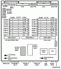

-
SPARCstation 1
Introduction
La SPARCstation 1 (nom de code “Campus”), ou Sun 4/60, a été commercialisée par Sun Microsystems dès avril 1989. Il s’agit avant tout de la première station de travail intégrant le puissant processeur SPARC au format “Desktop”.
Vendue à l’origine entre 9.000 $ et 20.000 $, elle était destinée à concurrencer sérieusement les PC haut de gamme et les MACs de l‘époque, tout en proposant un nouveau format de boîtier, dît “Pizza box” (par analogie évidente en regard de ses dimensions avec la célèbre boite à pizza en carton), ayant pour dimensions 40,5 cm x 40,5 cm pour 7cm pauvres centimètres de hauteur.
Hardware
Basé sur une l’architecture SPARC (Scalable Processor ARChitecture), une norme construite sur un modèle RISC (Reduced Instruction Set Computer), la SPARCstation 1 est basée sur un processeur LSI Logic cadencé à 20 Mhz uni à un coprocesseur FPU (Floating Point Unit, unité de calcul pour les nombres à virgules dits flottants) Weitek 3167 (ou 3170). Ces processeurs ont été introduits en 1987 par Sun pour remplacer les Motorola 68020 et 68030 qui équipaient alors leurs stations.
Il est a noter que Sun a sorti en 1990 un lifting de la SPARCstation, nommé tout simplement SPARCstation+1 et possédant une unité de calcul plus rapide, équipé d’un processeur LSI Logic à 25 Mhz et du coprocesseur Weitek 3172.

Cette station inaugure la série d’architectures sun4c. La carte mère propose 3 ports Sbus pour les cartes d’extensions (en remplacement des bus VME), de l’audio en 8 Khz, deux ports série au format DB25, un port AUI pour le réseau et un connecteur SCSI (qui permet notamment d’utiliser un lecteur de CD-ROM externe). Elle intègre aussi 30 emplacements mémoires, groupés par 4, permettant de disposer de jusqu‘à 64 Mo de RAM au format SIMM. Le boîter permet de loger 2 disques en SCSI-2 (50 pins), un luxe appréciable en regard de sa taille réduite, ainsi que le lecteur de disquettes à éjection motorisée.La carte graphique de base permet d’afficher 256 couleurs en 1152×900, avec des performances correctes pour l‘époque.
Le principal problème de ces stations à l’heure actuelle reste leur NVRAM, un petit composant capable de sauvegarder les données de l’Openboot (l‘équivalent du Bios sur PC) ainsi que l’heure du système, qui arrive en fin de vie.
Il est néanmoins possible de le changer assez facilement par un composant équivalent, ce que j’ai d’ailleurs fait pour la station que je possède.
Software
La station tourne par défaut sous SunOS 4.0.3, mais l’on peut utiliser Solaris jusqu‘à la version 7.
Linux et OpenBSD sont aussi supportés.Il faut néanmoins réaliser que la puissance limitée de la station est un frein pour l’utilisation d’OS modernes (OpenBSD 3.8 met plus de 3 minutes à démarrer sur la mienne, pourtant bien équipée).
Conclusion
La SPARCstation 1 propose donc un hardware complet, robuste et bien intégré, qui permet de profiter encore aujourd’hui de systèmes tels que SunOS 4 qui appartiennent maintenant à un autre âge.
Sources :
en.wikipedia.org/wiki/SPARCstation_1
neriki.free.fr/sparcstation.html
www.mo5.com/musee/fiche.php?id=sparcstation1
www.ice.mtu.edu/~jamyles/docs/fe/docs/wcd00007/wcd00734.htmpar Cédric TESSIER le 04/09/2006
{kind=link}
{kind=link}